Las excavaciones en cuatro fincas en la frontera con EEUU , donde agentes mexicanos y del FBI hallaron nueve cadáveres en noviembre pasado , concluyeron hoy al considerar que no hay indicios de que existan más fosas comunes , informó hoy la Fiscalía General.
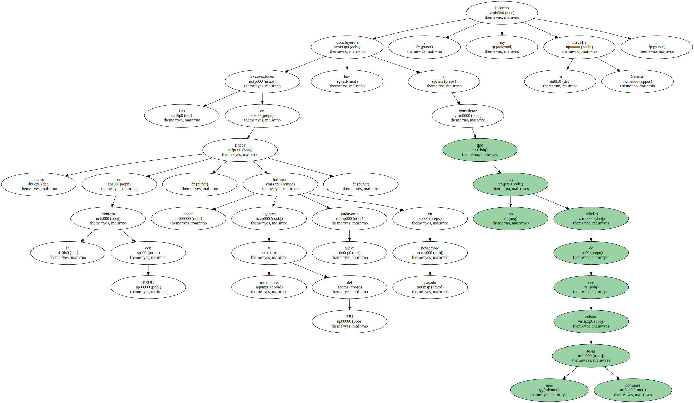Agentes mexicanos y especialistas estadounidenses de la Policía Federal ( FBI ) comenzaron el pasado 29 de noviembre las excavaciones que se ampliaron a cuatro fincas propiedad del cartel de la droga que encabezó hasta su muerte en 1997 , Amado Carrillo.

Al inicio de las excavaciones se manejó la versión periodística de que en esos ranchos podrían estar enterradas más de un centenar de personas , entre ellas 22 estadounidenses , que desaparecieron en Ciudad Juárez entre 1993 y 1999 , sin embargo sólo fueron localizados los restos de nueve personas vinculadas con el narcotráfico.

El procurador general de la República , Jorge Madrazo , explicó que la víspera concluyó la participación de los especialistas del FBI y hoy terminaron las excavaciones debido a que no hay indicios de que existan más cadáveres en las propiedades confiscadas.
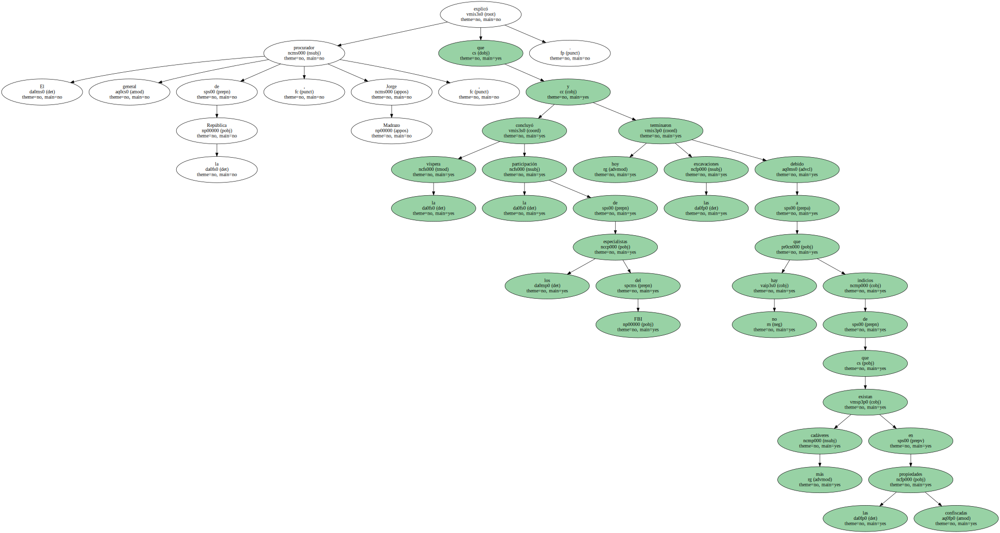Madrazo señaló que el hallazgo de nueve cadáveres demuestra la capacidad de beligerancia y violencia que desarrollan los narcotraficantes.
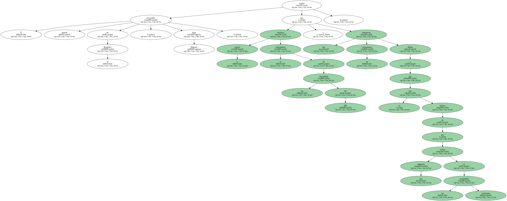El fiscal informó también de que los restos óseos fueron trasladados ayer desde El Paso ( Texas ) al Estado mexicano de Chihuahua y seis de ellos han sido identificados casi en su totalidad y podrían ser entregados en breve a sus familiares.
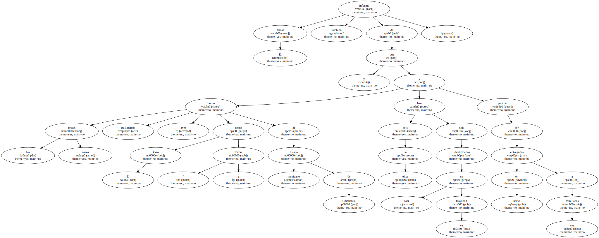Madrazo se reunió hoy con senadores de diversas comisiones a quienes explicó el mecanismo legal utilizado por la Procuraduría para permitir que la entrada en México de 72 especialistas de la Oficina Federal de Investigación ( FBI ).
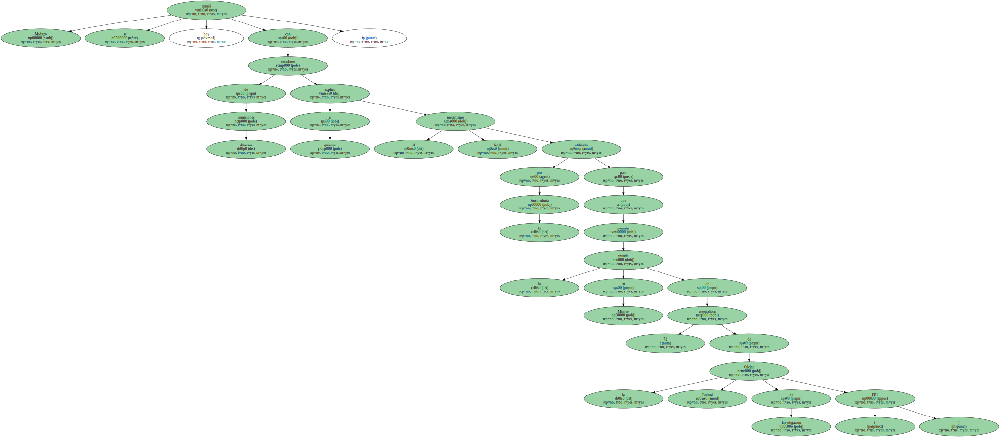La operación conjunta para recabar pruebas físicas de operaciones del cartel del narcotráfico de Carrillo , alias " El señor de los cielos " , generaron en México una fuerte controversia en círculos políticos por entenderse que EEUU había violado la soberanía de México.
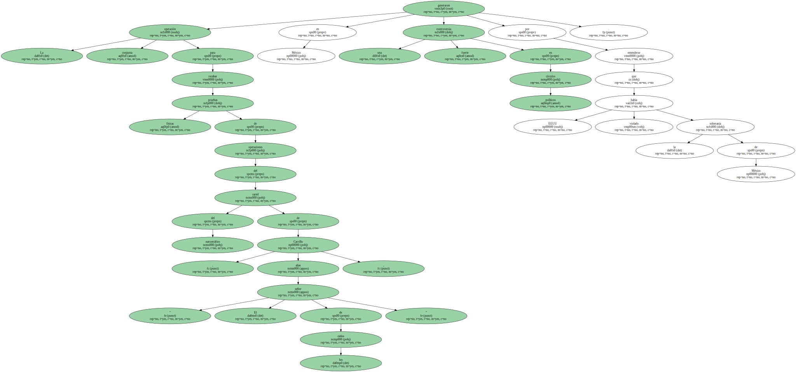En su reunión con senadores , Madrazo ofreció explicaciones sobre el operativo y el apoyo que recibió por parte de los ministerios de Gobernación y Defensa , además informó que durante la operación se cumplieron los acuerdos bilaterales y convenios internacionales en materia de combate al narcotráfico.
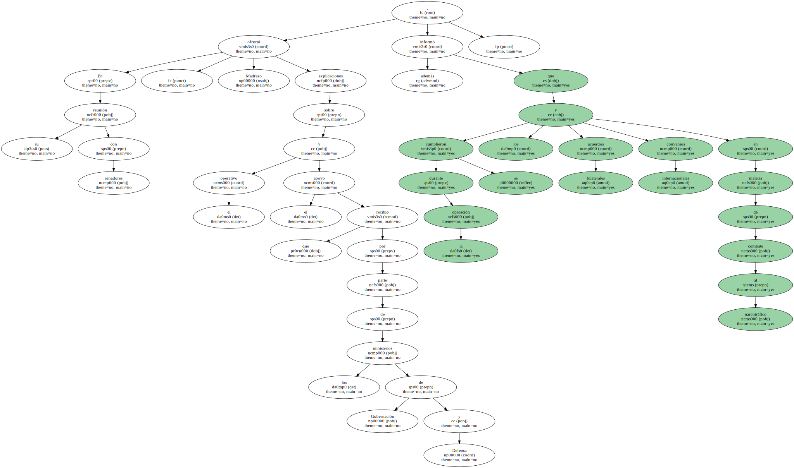Al término de la reunión , el fiscal general recibió el apoyo de los legisladores que admitieron que si se acudió al apoyo del FBI fue porque México no cuenta con los avances en medicina forense y otras áreas en las que especialistas estadounidenses respaldaron las tareas durante las excavaciones.
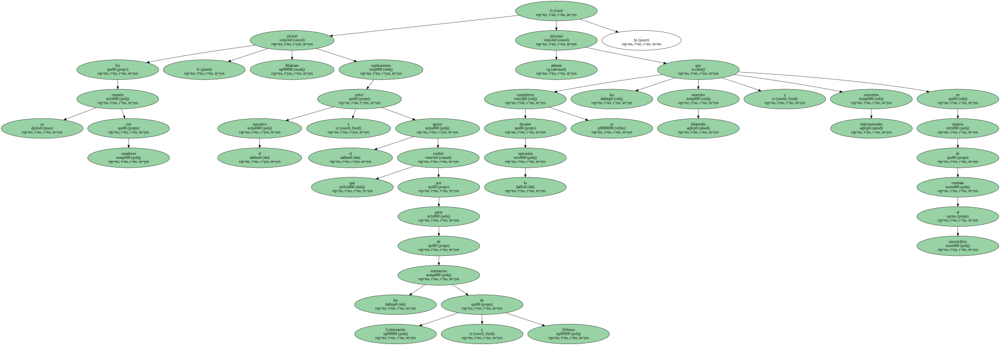La operación implicó trabajos en cuatro ranchos que siguen bajo el control de la Procuraduría General de la República.
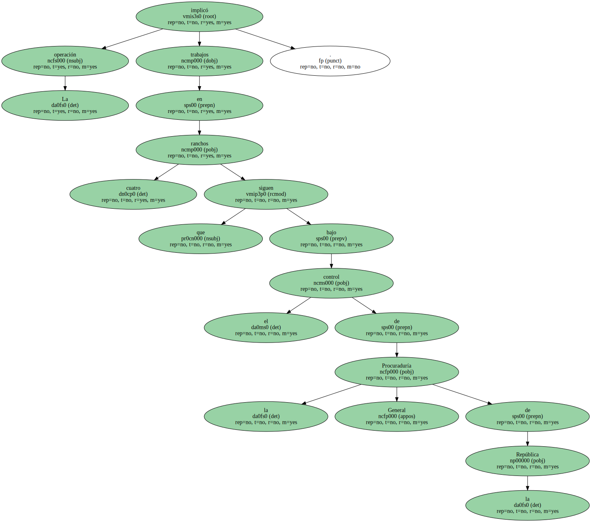En tres de ellos fueron hallados nueve cadáveres y un laboratorio para procesar cocaína , se incautaron armas de fuego y cinco personas están bajo vigilancia policial mientras concluye la investigación.
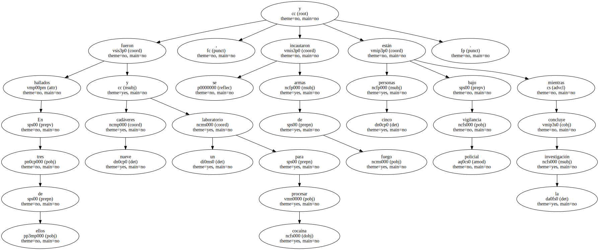En la operación bilateral participaron 72 especialistas del FBI en medicina forense , dibujantes , manejo de materiales peligrosos e informática , 220 militares mexicanos y otras 182 personas de la PGR.
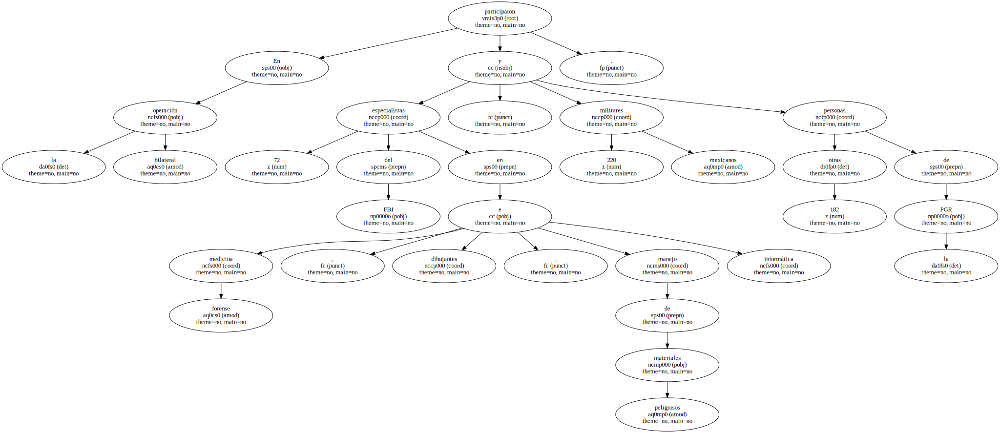